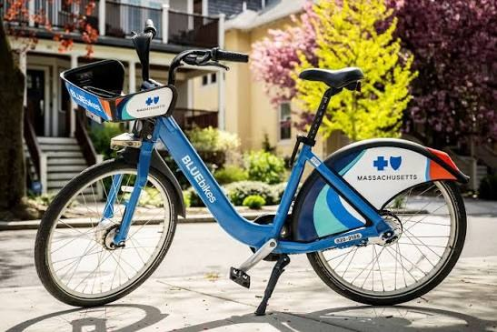

Data Analytics Engineer completing an M.S. at Northeastern University, with research experience spanning quantum-classical ML for satellite imagery at ISRO and end-to-end analytics pipelines for civic data. Focused on building systems that turn raw, high-volume data into decisions people can act on.
Experience
Graduate Teaching Assistant
May 2026 – Aug 2026
Northeastern University · IE6600, Computation & Visualization for Analytics
- Supported 60+ graduate students in mastering data visualization pipelines in Python and R, strengthening their project submissions.
- Designed and delivered hands-on sessions on interactive dashboard development using Plotly, Dash, and Shiny for real-world engineering datasets.
- Graded assignments with structured, rubric-based feedback to sharpen students' visualization design and analytical communication.
- Coordinated with lead TAs and faculty to keep online and in-person instruction in sync, including extra coverage during the May–June intensive.
Research Intern
Apr 2025 – Aug 2025
National Remote Sensing Centre — ISRO
- Developed hybrid quantum-classical ML pipelines in Python, Qiskit, and AWS Braket to accelerate satellite image processing for Earth observation.
- Built and benchmarked grayscale image classification models, improving pattern recognition accuracy over classical baselines.
- Quantified computational efficiency gains from quantum methods alongside research teams, contributing findings to internal technical reviews.
Machine Learning Trainee
Jan 2024 – Apr 2024
Cognibot
- Engineered and optimized predictive ML models in TensorFlow and scikit-learn, improving accuracy through systematic hyperparameter tuning and feature engineering.
- Benchmarked algorithms across diverse datasets to identify top-performing approaches and guide product development decisions.
- Presented model performance findings and actionable insights to cross-functional stakeholders.
Projects
AI-Powered Job & Co-op Finder
Aggregates listings across four job APIs, enriches each posting with an LLM (skills, salary, visa sponsorship), and flags roles that support international students — served through a live search dashboard.
Repository ↗

Boston Bluebikes Analytics Pipeline
An end-to-end lakehouse for city bike-share data: raw trips land in Delta Lake, get modeled with dbt, and surface as station-demand and member-vs-casual ridership insights on a dashboard.
Repository ↗